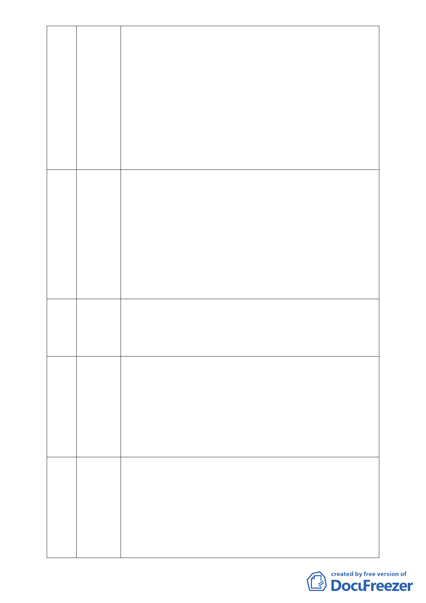

28 李日進 請教大家保護區為何要叫做保護區，委員應該很清楚就是要保護
它，而慈濟又為何要去買保護區，其動機何在？另外要請教找 39 位
里長連署的目的又是什麼？個人私下曾邀約幾位里長過來卻又表示
很為難，其背後有值得大家深思與討論之處。87 年曾舉辦慈濟蓋大
樓的公投，其結果是不通過的，而是希望其成為水土保育示範園區。
至於鐵皮屋的問題又為何 10 幾年來都沒有處理，而就只是做環保回
收。個人也曾經拜訪慈濟上頭 10 幾戶農家，據稱只要下大雨他們就
淹水了，也不用等到大水災。2004 年諾貝爾和平獎得主是推動綠帶
運動的麻薩伊博士，因為他 27 年種了 4500 顆樹，特提供請委員三
思。
29 許淑霄 慈濟所稱 37 位里長連署支持，而我們卻無法從里長那邊知道其內容
為何，另所稱 91 年做的隨機調查有 92％同意，惟大湖里和秀湖里
里民並未接獲此訊息，不能代表全部里民的意見。有關所提充分溝
通與座談，當初上人確曾指示用最小的破壞來利用此地，並徵詢大
湖里里民的意見，惟其選項亦包含退回建設公司進行開發，里民在
二害取其輕之考量下也只能選擇由慈濟開發，即其所謂溝通是不客
觀的。至於水的問題，本區在經歷二次颱風後市府已經投入大筆經
費增設二個大型的沉砂池，顯見本區水患之疑慮有多重，未來慈濟
在此興建是否又要讓市府投入更大的經費來為其紓困。
30 沈庭萱 本人贊同慈濟蓋志工大樓，惟要質疑的是為何要在保護區中蓋志工
大樓，且說到土地的最佳利用，當初違法填土至今為何市府沒有予
以回復原狀，市府應展現魄力以保障市民安危。在保護區劃設理由
未消失之前，請市府嚴加把關保留應有的土地與綠地。
31 吳俊彥 內湖科學園區為現今全台灣產值之冠，也代表內湖的驕傲，大湖有
山有水，實為秀麗之地，唯一欠缺的是人文素質的培養，故如能藉
由慈濟園區的設立來提升本區之人文，本人是贊成的。惟本人仍有
一附帶條件的建議就是未來慈濟在規劃設計時ㄧ定要謙卑的將其建
築納為大湖公園的延伸，避免與大湖景緻格格不入。且未來慈濟必
須完全開放給市民，以獲取認同。也藉由慈濟園區景觀的改善讓捷
運文湖線成為最美麗的景觀捷運線。
32 盧瑞山 本人居住內湖 25 年，專業為環境工程博士，希望大家站在合理客觀
立場來討論此案，本案不要因為保護區變更即予以妖魔化而拒絕溝
通。有關北基地是否有斷層實屬臆測，民眾不應被誤導。另有關大
湖山莊街過去的淹水紀錄也不能跟現址混為一談，因其分屬不同的
集水區。而所謂南基地舊礦坑遺址與南基地也並無重疊。故相關評
估結果顯示，本案規劃是在既有的基地平地上以對環境最有利的方
式作最小度與適度的開發，本案不僅充分考量排洪之規劃，並考慮
- 16 -